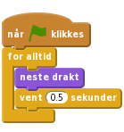
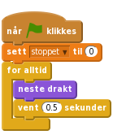
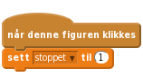
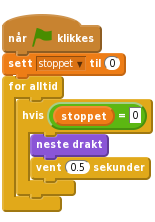
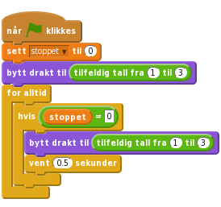
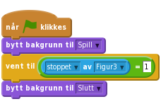
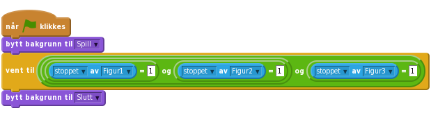
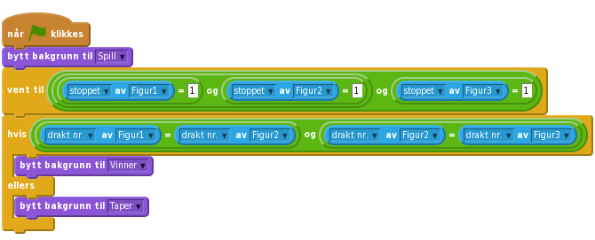

1.4
Enarmet banditt
Dette er et spill med tre figurer som endrer utseende. Din oppgave er å stoppe figurene én etter én, slik at alle tre blir like.

La oss importere de bildene vi trenger for spillet
slett. . Velg den figuren du vil.
. Velg den figuren du vil.Drakter, og importer to ekstra drakter fra biblioteket, slik at figuren har tre drakter til sammen. Det er bra om draktene er ganske forskjellige.Nå som figuren har noen drakter, ønsker vi at den skal veksle mellom dem.
Skript-fanen,Legg til dette skriptet:

Tilpass tiden i vent-klossen til figuren endrer drakt i et passende tempo. Hva tror du ville skjedd om vi ikke hadde med vent-klossen?
Klikk på det grønne flagget.
Tilpass tiden i vent-klossen. Hvilke tall gjør spillet for vanskelig eller for lett?
Nå skal vi se hvordan vi kan få draktene til å stoppe når vi klikker på figuren.
Bra! Vi kan få draktene til å bytte i det uendelige, men hvordan får vi de til å stoppe når vi klikker på de? En måte å gjøre dette på er ved å bruke en variabel som setter statusen til figuren. Dette vil vi se at er praktisk også senere.
Data og Lag en variabel. Kall variabelen stoppet og huk av for For denne figuren. Fjern avhukingen foran variabelen slik at den ikke vises på scenen.På starten av spillet vil ikke figuren ha blitt klikket så da setter vi variabelen til 0.

Nå vil vi sette variabelen stoppet til 1 når noen klikker på figuren.

Til slutt må vi få figuren til å slutte å forandre drakt når variabelen stoppet blir 1. Legg til en hvis-løkke og bruk en _ = _ operator-kloss for å sjekke om stoppet fremdeles er 0.

Klikk på det grønne flagget.
Start skriptet igjen.
Nå trenger vi to figurer til for å gjøre spillet komplett!
lag en kopi.Figur1, Figur2 og Figur3. , hvis det trengs.
, hvis det trengs.Klikk på det grønne flagget.
La oss få figurene til å skifte til en tilfeldig drakt når det grønne flagget klikkes.
Når du starter spillet vil du se at alle figurene skifter drakt samtidig. Spillet vil bli morsommere (og vanskeligere) dersom de endres litt mer uforutsigbart.
Drakter-fanen til en figur vil du se at hver drakt har et nummer. Du kan spesifisere hvilken drakt figuren skal ha ved å bruke enten navnet eller nummeret.bytt drakt til-kloss med tilfeldig tall fra 1 til 3 for å velge draktnummer.Vi kan også bruke den samme klossen i for alltid-løkken slik at figuren skifter til en ulik drakt hver gang den forandres.

Gjør det samme for hver av de andre figurene.
Klikk på det grønne flagget.
Gjør spillet vanskeligere!
Se om du klarer å endre vanskelighetsgraden på et eller annet vis. Å få draktene til å rullere raskere er enkelt. Prøv å gjøre noe litt mer oppfinnsomt. Noen muligheter du kan tenke på er:
Lek og kom opp meg egne idéer!
Hver gang du endrer noe, tenk på om det vil gjøre spillet lettere eller vanskeligere. Er spillet for lett eller for vanskelig? Hvordan kan du justere det slik at det blir akkurat passe?
La oss vise en Spillet er slutt-melding når spillet er over.
La oss først hente en ny bakgrunn som vi viser når spillet er over.
Bakgrunner-fanen. Forandre navnet på den eksisterende bakgrunnen til Spill.Spillet er slutt!. Du kan forandre størrelsen på teksten ved å klikke på den og dra i hjørnene. Kall bakgrunnen Slutt.Skript-fanen for scenen og pass på at du bytter til Spill-bakgrunnen når spillet starter.Hvordan kan vi sjekke om alle figurene har stoppet? Husk at vi brukte stoppet-variabelene for å sjekke om figurene hadde blitt klikket på. La oss sjekke stoppet-variabelen for Figur3 for å se om den er klikket. For å gjøre dette bruker vi en x-posisjon av Figur3-kloss fra Sansning, men hvor vi bytter ut x-posisjon med stoppet.

Klikk på det grønne flagget.
Spillet er slutt-meldingen når du klikker på Figur3?Figur3 før du har klikket begge de andre figurene?La oss forandre skriptet slik at det vil funke uansett hvilken rekkefølge figurene stoppes i.
For å sjekke om alle tre figurene sine stoppet-variabler er satt til 1, kan vi bruke og-operatoren. Dette er en komplisert kloss som kan være litt trøblete å lage, så forsøk å gjøre ett steg av gangen. Legg merke til at vi har satt sammen to og-klosser, tre _ = _-operatorer og tre stoppet av Figur-klosser.

Klikk på det grønne flagget.
Spillet er slutt-meldingen når alle tre figurene er stoppet, uansett hvilken rekkefølge du klikket på dem?Målet med spillet er å klikke på figurene slik at de stopper når de viser samme drakten. Det ville være praktisk å vise en melding som forteller deg om du vant eller tapte.
Vi har tidligere skrevet kode som sjekker om spillet er over, så alt vi trenger å gjøre er å sjekke om spilleren har vunnet.
Slutt-bakgrunnen. Skift navn på Slutt til Vinner. Gi kopien navnet Taper.Du vant! på Vinner-bakgrunnen.Taper-bakgrunnen kan du skrive teksten Du tapte!.Nå trenger vi kode for å velge hvilken bakgrunn vi skal vise når spillet er over.
Vi kan bruke en hvis ellers kloss for å se om brukeren har vunnet eller tapt ved å sammenligne drakt nr. (drakt nummer). Vi bruker en kloss som ligner på x-posisjon av Figur-klossen vi brukte tidligere. Denne gangen, istedet for å se på stoppet-variabelen, skal vi sjekke drakt nr. og se om Figur1 har samme drakt som Figur2 og om Figur2 har samme drakt som Figur3.

Klikk på det grønne flagget.
Veldig bra! Du har nå fullført spillet, men det er fremdeles ting du kan gjøre med spillet ditt. Prøv deg på disse utfordringene!
Alle er ikke like flinke til spillet. Hvordan kan du la vanskelighetsgraden avhenge av spilleren?
En måte å gjøre dette på er å endre hastigheten draktene forandres på. Du kan bruke en variabel kalt forsinkelse for å gi varigheten til hver figurs ventekloss. Hvis spilleren vinner runden kan forsinkelsen reduseres litt (for å gjøre spillet vanskeligere). Hvis spilleren taper runden kan man øke forsinkelsen litt for å gjøre spillet lettere.
Du må sikkert vurdere å bruke en annen måte å starte spillet på istedet for å bruke når grønt flagg klikkes. Deretter kan du lagre verdiene i variabler som huskes mellom rundene.
Godt gjort, du er ferdig! Nå kan du nyte spillet ditt!
Ikke glem at du kan dele spillet med alle vennene og familien din ved å klikke på Legg ut i topp-menyen!